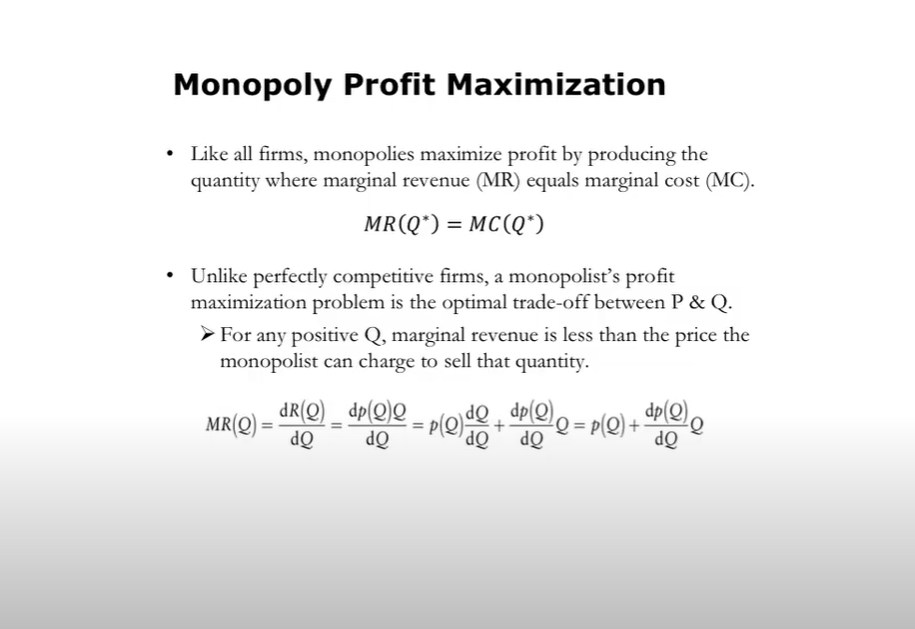
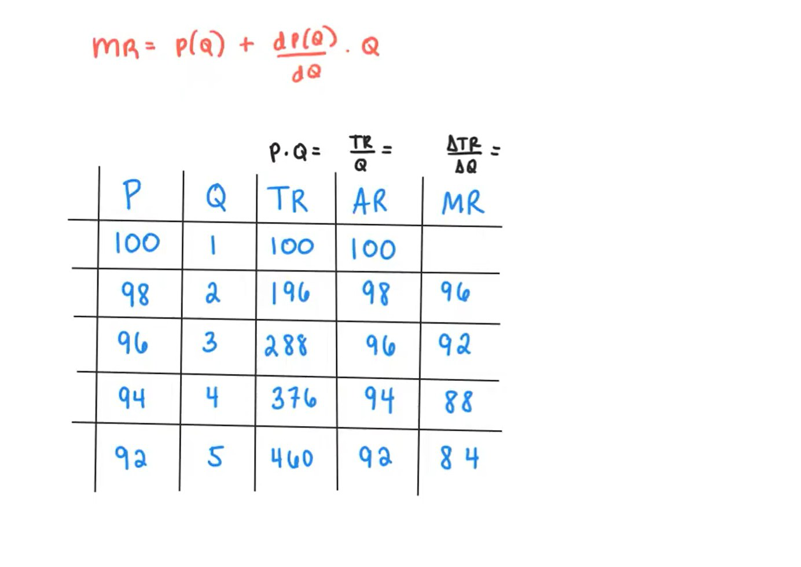
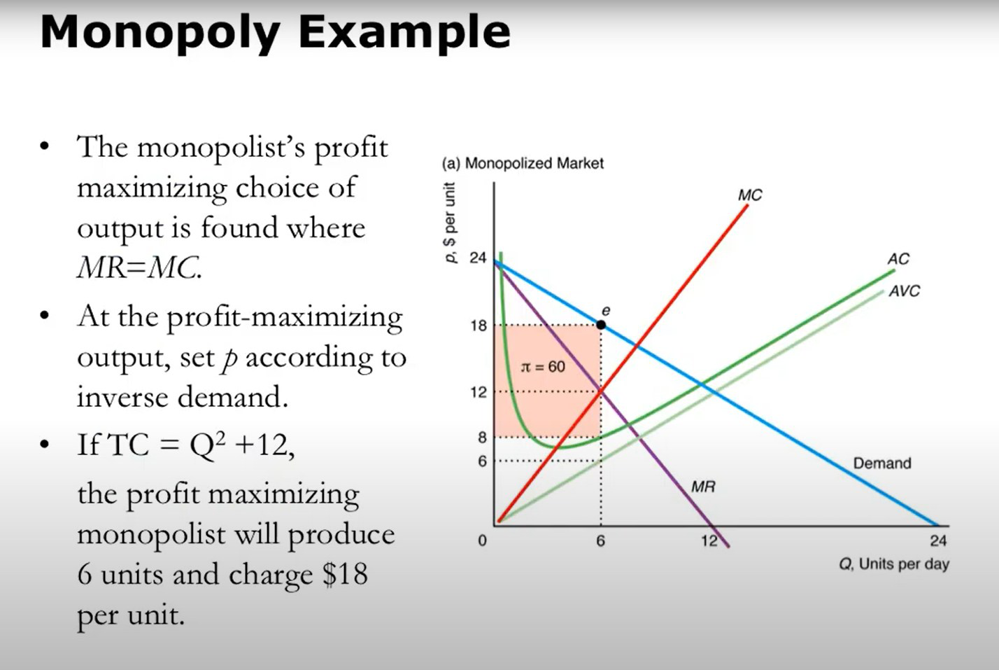

Like all firms, monopolies maximize profit by producing the quantity where marginal revenue (MR) equals marginal cost (MC).
\[ MR(Q^*) = MC(Q^*) \]
Unlike perfectly competitive firms, a monopolist's profit maximization problem is the optimal trade-off between P and Q.
\[ MR(Q) = \frac{dR(Q)}{dQ} = \frac{dp(Q)Q}{dQ} = p(Q) \frac{dQ}{dQ} + \frac{dp(Q)}{dQ} Q = p(Q) + \frac{dp(Q)}{dQ} Q \]

The general formula for marginal revenue:
\[ MR = p(Q) + \frac{dp(Q)}{dQ} Q \]
When the demand curve has the form \( P = a - bQ \), the marginal revenue is:
\[ MR = a - 2bQ \]
A numerical table showing the relationship between price, quantity, total revenue, average revenue, and marginal revenue:

Given a monopolist with:
Calculate the monopolist's profit \( \pi \).
Solution:
\( \pi = 60 \)
Explanation:
